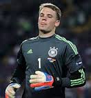

FC Bayern Monachium
Oficjalna strona
Lewandowski
zawodnikiem meczu

Hat-trick i dwie asysty - to dorebek naszego
najlepszego napastnika z sobotniego meczu z Augsburgiem. Niemal
ca³y ¶wiat zachwyca³ siê skuteczno¶ci±
Polaka, lecz równie¿ jego piêkn± asyst±.
Lewandowski na nowozosta³ królem strzelców.
Bezkonkurencyjny zawodnik meczu.
Newsy
Manuel Neuer kontuzjowany
Nigdy nie ma odpowiedniego momentu na kontuzje, ale ta w przypadku Manuela Neuera nadesz³a wyj±tkowo nie w porê. 31-letni golkiper dozna³ bowiem w ¶rodku tygodnia urazu stopy i pewne jest, ¿e nie zagra w dwóch nadchodz±cych kolejkach przeciwko Augsburgowi oraz TSG 1899 Hoffenheim.Czytaj dalej
Pewna wygrana 6:0
W 26 kolejce Bayern mierzy³ siê z Augsburgiem. Choæ od dawna by³o wiadomo kto jest faworytem, to nikt nie spodziewa³ siê a¿ tak wysokiego wyniku. Po fantastycznym maczy ROberta Lewandowskiego Bayern zgromi³ ruwala a¿ 6 do 0 i umocni³ siê na pozycji lidera Bundesligi.Czytaj dalej
Powrót Boatenga
Jak poinformowa³ trener Bayernu - Carlo Ancelotti - Jerome Boateng jest ju¿ zdrowy. Podobno ju¿ od paru dni trenuje indywidualnie, a za oko³o tydzieñ, powinien byæ gotowy do gry. Najwa¿niejszym pytaniem jednak jest, czy zd±¿y wróciæ do formy
na mecze z Realem?
Czytaj dalej
Ju¿ w ¶rodê, 12 kwietnia, Bayern zagra pierwszy mecz z Realem Madrid w ramach æwieræfina³u Ligi Mistrzów. Spotkanie zostanie rozegrane na Alianz Arenie o godzinie 20:45. To bez w±tpienia jeden z najtrudniejszych meczów w tym sezonie. Liczymy na prze³amanie z³ej passy w LM i wygran± z hiszpañskim klubem oraz awans do pó³fina³u. Aby pomóc selekcjonerowi prosimy o to, by¶ wype³ni³ ankietê.
© 2017, Oficjalna strona Bayernu Monachium
Wszystkie znaki firmowe pojawiaj±ce siê na tej stronie nale¿± do ich w³a¶cicieli.